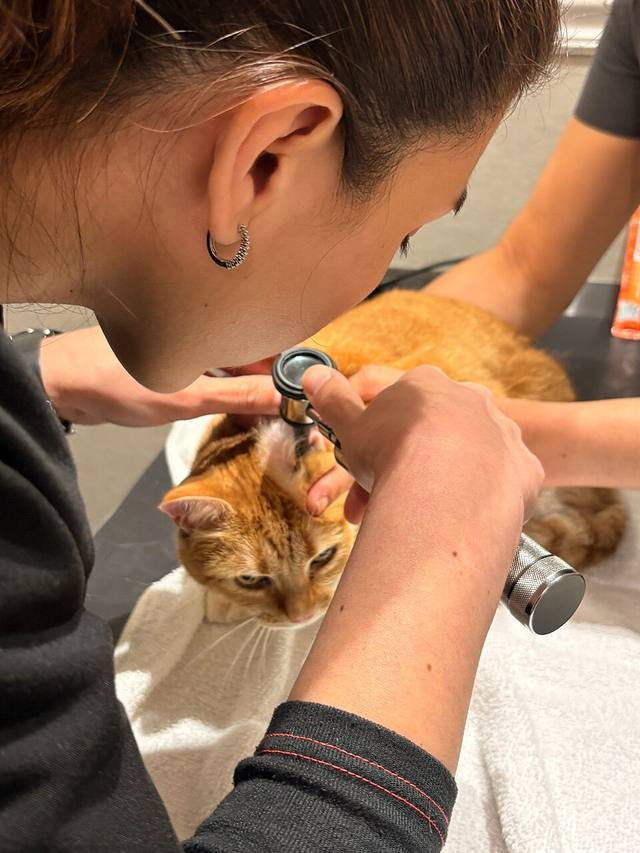
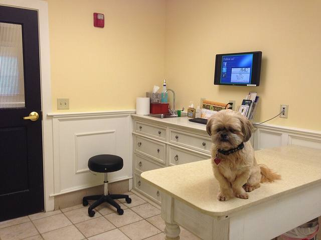
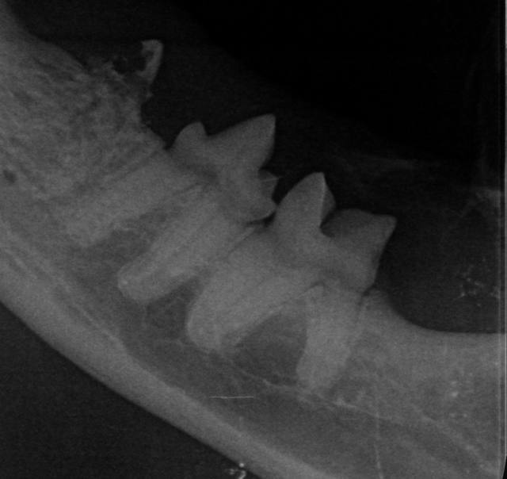
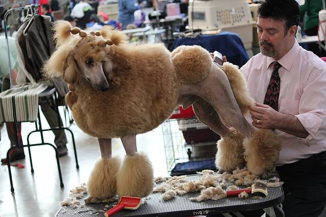
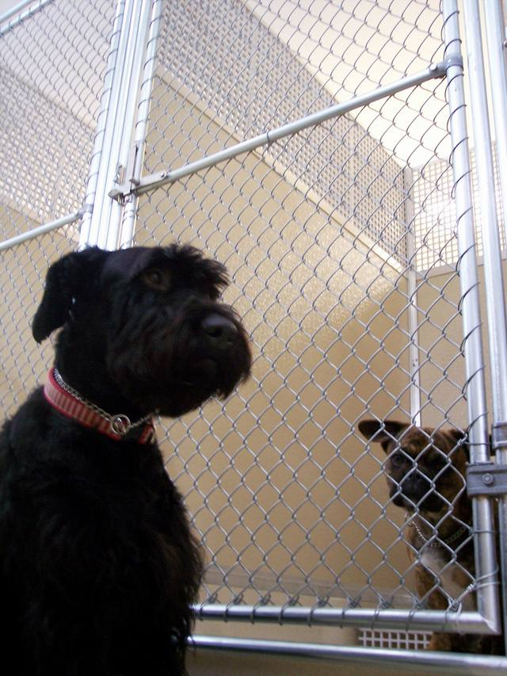

Veterinarian Pet Alliance · CC BY 4.001
Perkhidmatan veterinar
Pemeriksaan dan rawatan oleh doktor haiwan klinik.
Klinik veterinar, penjagaan & grooming haiwan peliharaan di Taman Matahari Heights, Senawang. 🐾

Gambar hiasan · MarkBuckawicki · CC0Servis
Seperti yang disenaraikan di halaman klinik. Butiran & harga akan disahkan oleh pemilik

Veterinarian Pet Alliance · CC BY 4.0Pemeriksaan dan rawatan oleh doktor haiwan klinik.

Corak80 · CC BY-SA 4.0Kemudahan X-ray di klinik.

daveynin · CC BY 2.0Dandanan haiwan peliharaan.
Jenis dandanan akan disahkan oleh pemilik
behavior training & coaching · CC BY 2.0Penjagaan haiwan semasa anda bercuti atau bekerja.
Kapasiti & kadar akan disahkan oleh pemilikNotis klinik
Klinik ada kalanya memaklumkan cuti umum atau doktor tidak bertugas pada sesi tertentu. Di laman sebenar, notis terkini klinik dipaparkan di kotak ini.
Soalan lazim
Buka — 10 pagi hingga 12 tengah hari, kemudian 3 petang hingga 7 malam.
Ada — Pet Grooming disenaraikan di halaman klinik. Jenis & harga akan disahkan oleh pemilik.
Klinik menyenaraikan pet-sitting & pet boarding. Kekosongan akan disahkan oleh pemilik.
Tidak — klinik tutup pada hari Ahad.